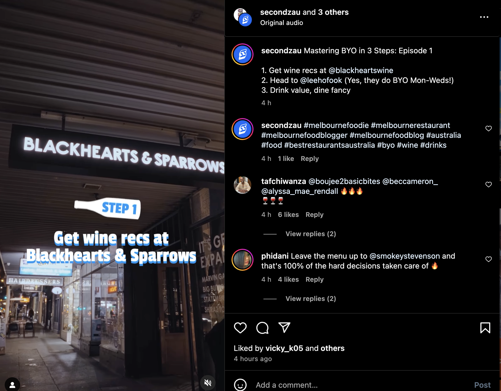

1st Day
Introduction to the Secondz workflow, application used (google drive, sheets and documents, premier pro and photoshop)the people, the goal with secondz and the new campaigns they are doing. My supervisor ran me through my task sheet and how I would recieve and deliver projects.
2nd Day
On this day, I started in making the editing brief and organizing the raw footage for Secondz BYO with Blackhearts and Sparrows Campaign. The editing brief consisted of creating a visual storyline sequence for the editors to follow, highlighting which footage and soundbites were useful, and specifying the design and rendering requirements for Instagram.
3rd Day
Continued working on BYO blackhearts editing brief and footage organisation. Friday is my half day so I only wortk 4 hours. My supervisor taught me a script that helps organise all footage files into a google sheet document quickly which makes going through and annotating them way easier!